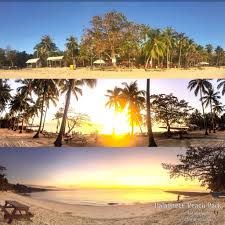
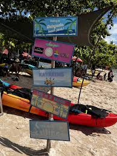

DALAGUETE BEACH PARK IN CEBU PROVINCE, PHILIPPINES
Nestled along the southern coast of Cebu, Dalaguete Beach Park is a serene getaway known
for its soft white sand, crystal-clear waters, and peaceful ambiance.
It’s a favorite among locals and travelers seeking a quiet spot to relax away from the crowds.
DALAGUETE BEACH PARK IN CEBU PROVINCE, PHILIPPINES
Plan for the sun and tides: arrive early for calm waters, secure a sunset table for the view, bring
reef-safe sunscreen, pack light snacks and water, and follow local safety instructions.
Whether you’re after a peaceful retreat or a scenic seaside adventure,
Dalaguete Beach Park is a place you’ll always want to return to.

MAGICAL SUNSET VIEWS AT DALAGUETE BEACH PARK
Witness the stunning sunset over Dalaguete Beach Park’s horizon.
The golden hues reflecting on the water create the perfect moment for photography lovers and romantics alike.
MAGICAL SUNSET VIEWS AT DALAGUETE BEACH PARK
Arrive early to grab the best spot for sunset viewing. Don’t forget your camera or smartphone
to capture breathtaking photos. Small vendors nearby sell snacks and drinks to enjoy during the sunset.
Perfect for couples, photographers, and anyone looking to unwind after a busy day.

KAYAKING AND WATER ACTIVITIES AT DALAGUETE BEACH PARK
Dalaguete Beach Park is not just for relaxing — adventure seekers can enjoy kayaking, paddleboarding,
and swimming in clear waters. A fun day for families and friends.
KAYAKING AND WATER ACTIVITIES AT DALAGUETE BEACH PARK
Kayak rentals are available on-site. Always wear a life vest and check local weather conditions.
Paddle leisurely or explore further along the shoreline.
Bring light snacks and drinks for a fun, active day by the sea. Perfect for friends, families, and solo adventurers.